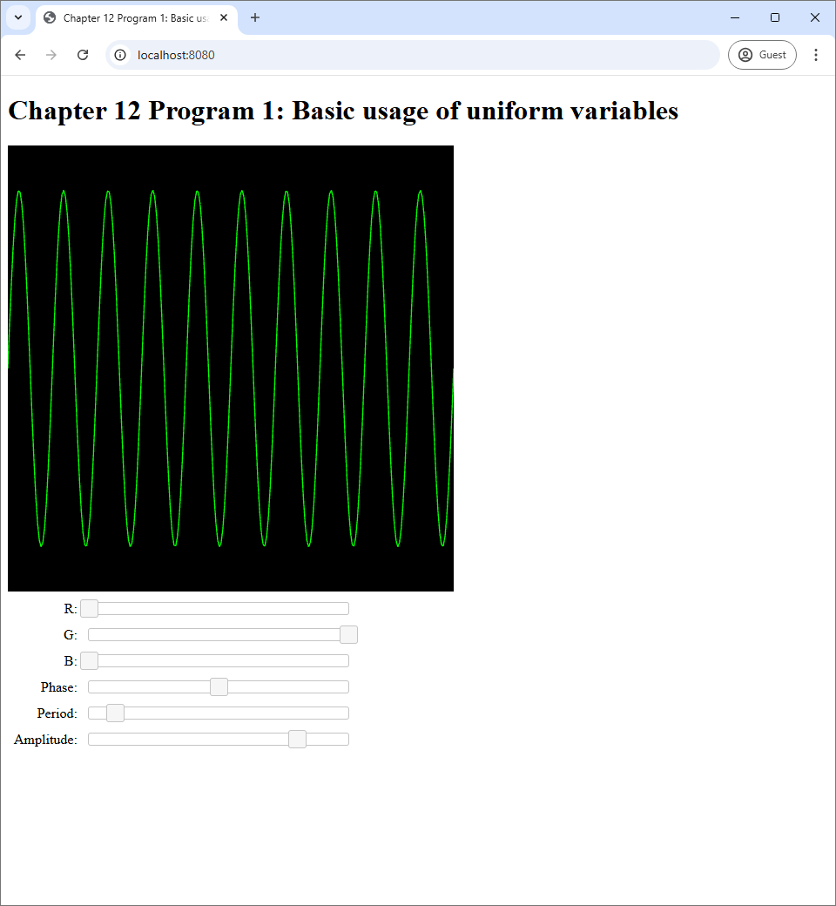
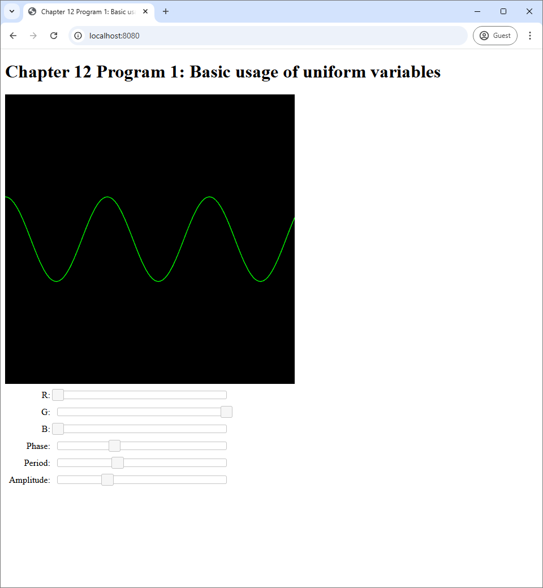
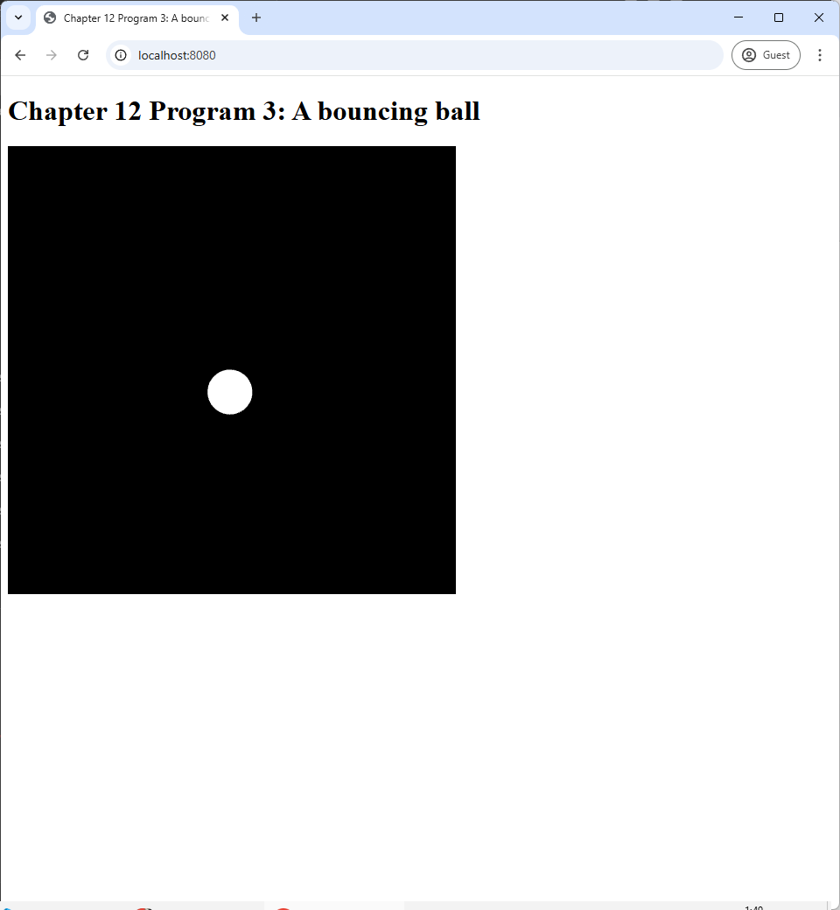
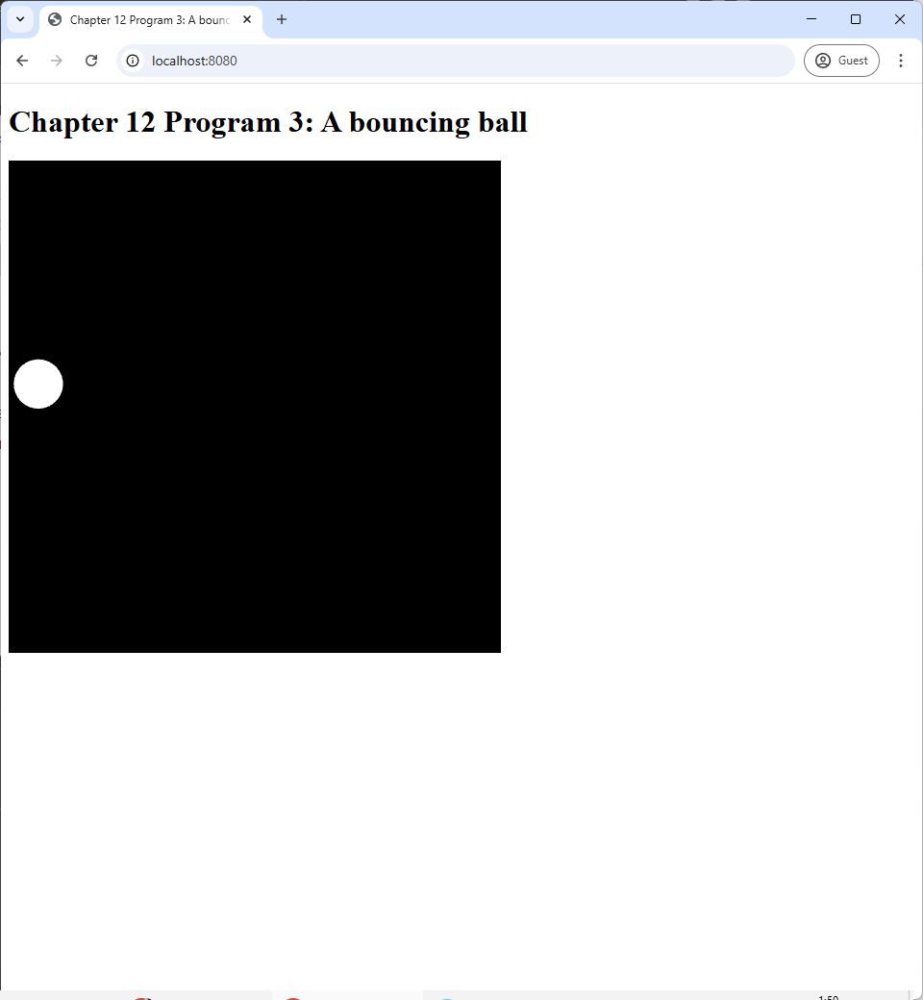
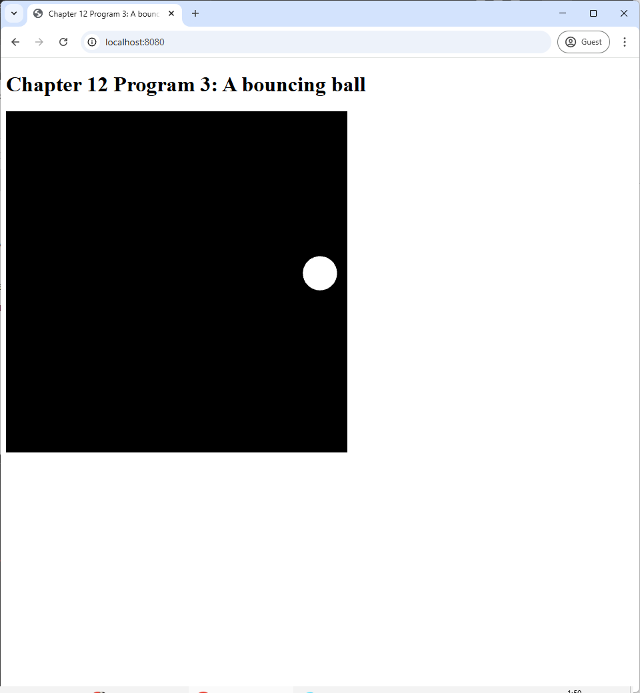

In this last chapter, we saw examples on how vertex shaders can be used to render more complex shapes by transforming simple shapes. One thing that should become clear is that a GLSL program can only transform shapes that are passed to them through vertex and index buffers. The data that are to be stored in these buffers are prepared first by the Javascript part of our application, which we shall call the host program. They are then stored in the computer's main memory (i.e., RAM). Then, the host program transfers the data to the buffers, which reside in GPU memory. As a result, communication between the host program and the GLSL program is a crucial part of 3D application development with OpenGL.
So far, we have been using only one mechanism for communication between a host program and a GLSL program: buffers. Buffers are specialized for communicating vertex and index data, and they have many restrictions. GLSL programs do not have direct access to data inside index buffers. A vertex shader can access data inside vertex buffers, but a fragment shader cannot. However, there are two more such mechanisms: uniform variables and textures. This chapter discuss the former, but the reader would have to wait until Chapter XXX for a discussion of the latter.
A uniform variable is a piece of GPU memory for storing a small piece of information, which can be directly set by the host program. Unlike buffers, both vertex shaders and fragment shaders have access to uniform variables. Both shaders would see the same value when referencing the same uniform variable, and this is why it is called "uniform." Moreover, the shaders cannot change the value themselves, so this value would remain constant until the host program rewrites the variable. As a result, uniform variables can serve as "global" variables for GLSL programs.
In this chapter, we will how to declare and manipulate uniform variables with both GLSL and Javascript. We start with a simple program where uniform variables are used to communicate user inputs to GLSL programs. We will then see how to manipulate uniform variables so that they change with time, and this would allow use to create simple animations. We will then study uniform variables that have struct type, which allow us to systematically manage related variables.
Program 1's source code is available in the chapter-12/program-01 directory of the code repository. Its screenshots are shown in Figure 12.1.
|  |  | |
| (a) | (b) | (c) |
Program 1 draws a sine curve on its canvas. The curve's color and shape can be control by the 6 sliders in the web page. The first three sliders are used to pick the RGB color of the sine curve. The next three sliders control the phase, period, and amplitude of the curve, respectively.
Recall that this is not the first time we control what appears on the screen with UI elements. In Program 4 of Chapter 8, we control the color of the canvas through sliders. Moreover, just in the last chapter, we choose what shapes appear in canvases through radio boxes. However, the mechanism used to change the canvas in these programs do not require any information to be passed from the host program to the GLSL shader. In Program 4 of Chapter 8, we use the slider values as arguments to gl.clearColor, a Javascript method. In the last chapters, we use the radio boxes' values to choose which GLSL program to use, and this process is carried out entirely in Javascript. In this chapter, though, we explicitly pass information from UI elements (i.e., the sliders) to the GLSL program, and let the program process the information itself.
As said earlier, the mechanism we use to pass information from host to GLSL in this chapter is the uniform variable. Let's see first hand how they are declared and used in the shaders of our program. We will start with the easier one, the fragment shader, whose source code is reproduced in full below.
#version 300 es
precision highp float;
out vec4 fragColor;
uniform vec3 color;
void main() {
fragColor = vec4(color, 1.0);
}The code above is very similar to those of the fragment shaders in the last chapter. There are two main differences. The first is that there is a new variable called color declared with the uniform keyword.
uniform vec3 color;As you may guess, this is the uniform variable in question. It is just a variable declared with the keyword uniform in front of the data type of the variable. One important thing to note is that a uniform variable must be declared outside any functions. This makes sense because a uniform variable is supposed to be a global variable that should be accessible from any functions. So, its scope should be the entire program, not just inside a particular function. However, remember that a uniform variable is read only, so one should not assign any value to it. In our fragment shader, we use the RGB values stored in the color variable to fill the first 3 components of the output fragment color.
Next, we look at the vertex shader, which is a little more complicated because it has three uniform variables instead of one.
#version 300 es
const float PI = 3.14159265359;
in float t;
uniform float amplitude;
uniform float period;
uniform float phase;
void main() {
float x = t;
float y = amplitude * sin(2.0 * PI * t /period + phase);
gl_Position = vec4(x, y, 0.0, 1.0);
}We can see creates a sine curve by plotting points $(x,y)$ where
\begin{align*}
x &= t, \\
y &= \mathrm{amplitude} \times \sin\bigg(\frac{2\pi t}{\mathrm{period}} + \mathrm{phase}\bigg).
\end{align*}
Here the amplitude, period, and phase variables are uniform variables whose types are float. The names of the variables speak for themselves. The amplitude controls how tall the sine curve is. The period controls with width of one copy of the sine wave. Lastly, the phase controls the horizontal position of where a copy of the sine curve begins.
It is not enough to modify the GLSL code to declare and use uniform variables. We must change our Javascript code so that it becomes aware of them and assign their values. The code that manipulates uniform variables is in the updateWebGL method in the index.js file. Let us start with how to assign a value to the amplitude uniform variable. The first thing we do is to fetch the value to assign from a slider.
let amplitude = this.amplitudeSlider.slider("value") / 1000.0;Here, the amplitudeSlider is a JQuery UI slider that was prepared in the createUi method. How the slider came about is not important as the important thing is that we need a way to figure out what to assign to the uniform variable.
Before we can assign a value to a uniform variable, we need to use the GLSL program that the uniform variable is a part of. So, next part of the updateWebGL method looks like the following.
useProgram(this.gl, this.program, () => {
//
// Assigning values to uniform variables.
//
setupVertexAttribute(
self.gl, self.program, "t", self.vertexBuffer, 1, 4, 0);
drawElements(
self.gl, self.indexBuffer, self.gl.LINES, (self.numVertices-1)*2, 0);
});We see that the code uses the useProgram function that we learned about in Section 9.4.1. All the manipulation of the uniform variables are done inside the closure that we give the useProgram function as an input. Moreover, notice that the segment that assign uniform variable comes before the last two statements, which draw primitives. This makes sense because uniform variables can affect the shape and appearance of the primitives being drawn, so we must assign them before drawing.
The segment that assigns values to uniform variables is quite long because we have four variables (rgb, amplitude, period, and phase) to take care of. However, assigning a uniform variable only involves two lines of code. We reproduce the piece of code that assigns the amplitude variable below.
// ******************
// * Using uniforms *
// ******************
// Step 1: Get its location.
let amplitudeLocation = self.gl.getUniformLocation(self.program, "amplitude");
// Step 2: Set its value using the right function.
self.gl.uniform1f(amplitudeLocation, amplitude);
Assigning value to a uniform variable involves two steps. The first is to find the "location" of the uniform variable. Here, a location is just a unique identifier that can be used to refer to the variable at a later time. It can be fetched by the getUniformLocation method of the WebGL context. The method requires two inputs. The first is the object representing the GLSL program that contains the uniform variable, and the second is the name of the variable as declared in either the vertex and/or fragment shader.
The second step is to assign the value with a method of the WebGL context whose name is of the form uniformXXX where XXX depends on the type of the uniform variable in question. For non-array types, the rule for the name is quite simple. XXX has two characters.
1, 2, 3, or 4, and it indicates how many numbers the data type can store.i or f, and it indicates the type of each number stored in the data type: i is for integer, and f is for floating point.As a result, the right methods to use for a number of types of uniform variables are as follows.
| Uniform variable type | Element type | Number of elements | Method name |
int |
int |
1 | uniform1i |
ivec2 |
int |
2 | uniform2i |
ivec3 |
int |
3 | uniform3i |
int |
int |
4 | uniform4i |
float |
float |
1 | uniform1f |
vec2 |
float |
2 | uniform2f |
vec3 |
float |
3 | uniform3f |
vec4 |
float |
4 | uniform4f |
uniformXXX method to be used for certain types of uniform variables.In our case, the amplitude uniform variable is of type float, which means the type can only hold one floating point number. Thus, the appropriate method to use is uniform1f. This method takes two arguments. The first is the location of the uniform variable, which we just fetched in the last step, and the second is the floating point value we want to assign.
Because the period and phase uniform variables are also of type float, we deal with these variables the same way we deal with amplitude.
let periodLocation = self.gl.getUniformLocation(self.program, "period");
self.gl.uniform1f(periodLocation, period);
let phaseLocation = self.gl.getUniformLocation(self.program, "phase");
self.gl.uniform1f(phaseLocation, phase);
We deal with the color uniform variable slightly differently because it is of type vec3 instead of float. As vec3 stores 3 floating point numbers, the WebGL context method used to assign its value is uniform3f instead of uniform1f.
let colorLocation = self.gl.getUniformLocation(self.program, "color");
self.gl.uniform3f(colorLocation, color[0], color[1], color[2]);
We can see that uniform3f takes 4 parameters instead of 2. The first parameter is still the location of the uniform variable, but 3 floating point values have to be supplied instead of 1. Here, we feed the three values in the color array that was prepared earlier in the updateWebGL function.
let color = this.rgbSliders.map(s => s.slider("value") / 255);This line of code computes the color array by applying the closure that extracts the slider value and divides it by $255$ to the three sliders that correspond to the R, G, and B values that the user can specify.
There are 6 other methods in Table 12.1 that we have not seen actual usage. However, their usage follows the same rule that applies to uniform1f and uniform3f. The first argument is the location of the uniform variable. The method then takes $N$ extra arguments where $N$ is the number in the method name, and these are arguments are the values to be assigned to the components of the uniform variable.
In this section, we are going to study another important way to use uniform variables: animation. This principle is simple. We can use Javascript to keep track of how much time have passed since our program started. Then, we can use this information to change how primitives are rendered. This is done by passing the time or other information derived from it to GLSL programs. This section's program renders a square moving in a circular path at a constant angular speed. This source code of the program is available in the chapter-12/program-02 directory of the book's Github repository. Screenshots of the program are available below.
An animation is an image that moves. This means that it changes with time. Creating animation thus requires us to draw different images at different time. As a r esult, a program that creates an animation must be aware of time. In our case, we need to keep track of how much time has passed since the program begins because the exact time (say, 10:10AM) does not matter.
We keep track of time through the use of the method performance.now in the host Javascript code. Here, performance is a global variable that comes with the Javascript language. The now method takes no arguments and returns the number of milliseconds since a time which is always before our Javascript program starts. The program has an infinite loop that keeps calling the updateWebGL method in order to repeatedly draw something on the WebGL canvas. As a result, if we call performance.now inside the updateWebGL, we can easily know the time (since the start time) that each interation of the loop is run.
As stated earlier, we will not use the time directly, but we will keep track of how much time has passed since the program started. To do so, we keep track of the last time the updateWebGL was called. This is stored in the lastTime field of the WebGLApp object that represents our application. We initialize the field in the constructor as follows.
this.lastTime = performance.now();When an instance of WebGLApp is constructed, its updateWebGL method has not been called yet. As a result, we set lastTime field to a time returned from performance.now to get an arbitrary starting point. This point in time is not exactly where the program starts, but it should be pretty close.
We use another field called elaspedTime to store the time since the lastTime field was initialized. We initialize the field to $0$.
Inside the updateWebGL method, we need to update both fields so that elapsedTime has the correct value. The code to do so is as follows.
let currentTime = performance.now();
let delta = currentTime - this.lastTime;
this.elaspedTime += delta;
this.lastTime = currentTime;
The logic of the above code is quite simple. We call performance.now to get the current time. We then subtract from it the lastTime field to get the number of milliseconds since last time the updateWebGL method was called. We add this value to the elapsedTime field to update its value. Then, we set the lastTime field to the current time so that we can use this value in the next iteration. The elapsedTime field now stores the number of milliseconds since the program starts, and it gets updated every time the updateWebGL method is executed.
One of the simplest form of animation is when an object continuously moves withouth changing its shape. The animation Program 2 shows is exactly this: a white square that moves in a circular path. To move is to change position. A displacement is a vector that represents a change in position. It is defined as: \begin{align*} \mathrm{displacement} = (\mathrm{new\ position}) - (\mathrm{old\ position}). \end{align*} Now, an object in our context is a mesh. A mesh is a collection of vertices that are connected together. Each vertex has a position, and it is stored in the mesh's vertex buffer. We often think of these positions as the vertices' "rest position" as they are the positions that define the shape of the object when it is not move or deformed. To move an object without changing its shape, we just have to move all vertices by the same displacement. In this way, all the relative distances between the vertices will be preserved. Mathematically, this is done by adding the displacement to the position of each vertex, and this is exactly what is done in the vertex shader of Program 2.
#version 300 es
in vec2 vert_position;
uniform vec2 displacement;
void main() {
gl_Position = vec4(vert_position + displacement, 0, 1);
}Much like many GLSL programs have seen before, we use the vert_position attribute variable to store vertex positions. What is new is the displacement uniform variable, which represents the displacement. We can see that what the vertex shader does is to add the displacement to the vertex position and output the result.
Now that we know how to move an object from its rest position to another position, we now need to figure out how to make the object's position change over time. This is easy: we only need to make the displacement changes over time. So, every time the screen is update, we need to set the displacement uniform variable to a new value. Let's look at the part of the updateWebGL method that does this.
let angularPosition = 0.001 * this.elaspedTime;
let displacementX = 0.5 * Math.cos(angularPosition);
let displacementY = 0.5 * Math.sin(angularPosition);
useProgram(this.gl, this.program, () => {
let displacementLocation = self.gl.getUniformLocation(
self.program, "displacement");
self.gl.uniform2f(
displacementLocation, displacementX, displacementY);
:
:
:
});Because we want our square to move in a circular path, the displacement should be vectors from the center of a circle to points on the circumference of the circle. In case of unit circles, the vectors are given by \begin{align*} \begin{bmatrix} x \\ y \end{bmatrix} = \begin{bmatrix} \cos \theta \\ \sin \theta \end{bmatrix} \end{align*} where $\theta$ is an angle. As a result, we can our square to move in a circular path by changing the angle over time. This is basically what the Javascript code do in this code line:
let angularPosition = 0.001 * this.elaspedTime;Here, angularPosition is the variable we use to represent the angle. As discussed in the last section, the field elapsedTime changes every time the updateWebGL method is called. The factor 0.001 is applied because elapsedTime's unit is milliseconds, which means that using the value directly would make the square move 1 radian (about one sixth of a circle) per millisecond, which is too fast for our naked eyes to see. From angularPosition, the code computes the $x$- and $y$-componets of the displacement with:
\begin{align*}
\begin{bmatrix}
\mathrm{displacementX} \\ \mathrm{displacementY}
\end{bmatrix}
&= \begin{bmatrix}
0.5 \cos(\mathrm{angularPosition}) \\
0.5 \sin(\mathrm{angularPosition})
\end{bmatrix}.
\end{align*}
The number $0.5$ here is the radius of the circle we want our square to move on. Because the canvas corresponds to the rectangle $[-1,1] \times [-1,1]$, choosing the radius of $0.5$ will make the square's path fit inside the screen.
Lastly, after the $x$- and $y$-components have been computed, we set the uniform variable displacement to these values with glUniform2f.
let displacementLocation = self.gl.getUniformLocation(
self.program, "displacement");
self.gl.uniform2f(
displacementLocation, displacementX, displacementY);
In the last section, we animate a rotating square that does not move, so we will create a more sophisticated animation in this section: one that involves a ball bouncing around the canvas. The source code of the program is availble in the chapter-12/program3 directory of the book's Github repository. Once you run the program, you will see a white circle moving along straight line paths and changing direction when it hits any one of the side of the screen.
|  |  |  |
| (a) | (b) | (c) |
The animation in this section is more advanced that that in the last section because of two reasons. The first is that the movement is more complex: the ball moves and bounces of walls instead of rotating in place. The second is that the shape is more complex: a circle instead of a square. We shall deal with the shape in this section.
You may recall that we have written a program that draw a circle before in the last chapter. However, we will usea different method here. The idea is to approximate a circle with a collection of triangles. We call such a triangle a "slice," much like a slice of pizza or a slice of pie. Each slice has two of its vertices on the circumference of the circle, and the circle's center serves as the third vertex.
You can see that the more slices we have, the more rounded our approximated circle will seem to the viewer. Here, we set the number of slices to 128 in the constructure of the WebGLApp class, and this is quite enough for the ball of radius $0.1$ that we will be drawing.
this.numSlices = 128;
this.radius = 0.1;
We need to write the createBuffers method, which creates the vertex and index buffers to be used later in the rendering loop. This means that we have to think about these vertices' positions and how they are ordered inside a vertex buffer. To allow ourselves to change the circle's radius if we so desire, we will create the vertex buffer so that it represents a circle of radius $1$ instead of $0.1$, and we will resize the circle inside the vertex shader.
Because there are 128 slices, there will be 128 vertices that are on the circumference of the circle. Then, there is another vertex which is at the center, so there are 129 vertices in total. We should arrange their positions inside a vertex buffer so that it becomes easier to construct the index buffer later. The author found that packing the vertices on the circumference as the first 128 vertices (Verticex #0 to #127) and putting the center as the last vertex (Vertex #128) makes index buffer construction easy. For the first 128 vertices, the $i$th vertex should have position
$$ \mbox{position of the $i$th vertex of circle of radius $1$} = \begin{bmatrix} \cos ( 2\pi i / 128) \\ \sin (2\pi i / 128) \end{bmatrix}$$
where $r$ is the radius of the circle. What are seeing here is that we are dividing the $2\pi$ complete angles into 128 intervarls, and this gives us 128 angles at the beginning of each intervals: $\frac{2\pi\times 0}{128}$, $\frac{2\pi\times 1}{128}$, $\dotsc$, $\frac{2\pi \times 127}{128}$. We then insert a vertex at each of these angles to the vertex buffer as done in the code below, which is located inside the createBuffers function.
let vertexData = [];
for(let i=0; i<this.numSlices; i++) {
let angle = 2 * Math.PI * i / this.numSlices;
vertexData.push(
this.radius * Math.cos(angle), this.radius * Math.sin(angle));
}
Then, we insert the circle's center $(0,0)$ at the end.
vertexData.push(0.0);
vertexData.push(0.0);
We can now specify the index buffer. Because each primitive is a triangle, we add three vertex indices at a time. Because there are 128 triangles, we do that 128 times. For the $i$th triangle, we use two adjacent vertices on the circumference—Vertex $i$ and $(i+1) \% 128$—and then add the center, Vertex 128.
let indexData = [];
for(let i=0; i<this.numSlices; i++) {
indexData.push(i);
indexData.push((i+1) % this.numSlices);
indexData.push(this.numSlices);
}
this.indexBuffer = createIndexBuffer(this.gl, new Int32Array(indexData));It's important that the second index we add is $(i+1) \% 128$ rather than $i+1$. This is because we cause we want the last slice—when $i=127$— to loop back to the first vertex. More specifically, it should use Vertex 127 and then Vertex 0. Adding 1 and then modulo by 128 accomplishes this.
Our vertex and index buffers are now complete. Nevertheless, they represent a circle of radius $1$ centered at $(0,0)$. However, what we want to render is a circle of radius $0.1$ that moves around the screen. How do we actually accomplish this? Notice that there are two problems here. The first is that the circle is too large, and the second is that it is fixed in space. To solve the first problem, we just have to realize that if we multiply all the vertex positions by $r$, the circle becomes $r$ times larger/smaller, which means it becomes the circle of radius $r$ centered at $(0,0)$. \begin{align*} &\mbox{vertex of circle of radius $r$ centered at $(0,0)$} \\ &= r \times \Big(\mbox{vertex of circle of radius $1$ centered at $(0,0)$}\Big). \end{align*} To solve the second problem, we use what we learned in the last section. If we want the circle to move around the screen, we just have to move all of its vertex by the same amount of "displacement." More specifically, we need to add a 2D displacement vector $\ve{d}$ to all vertex positions, and the circle will be centered at point $\ve{d}$ instead of $(0,0)$. \begin{align*} &\mbox{vertex of circle of radius $r$ centered at $\ve{d}$} \\ &= \mbox{vertex of circle of radius $r$ centered at $(0,0)$} + \ve{d} \\ &= r \times \Big(\mbox{vertex of circle of radius $1$ centered at $(0,0)$}\Big) + \ve{d}. \end{align*}
We write the vertex shader to carry out the last equation above. To do this, we need two uniform varibles, one to store the radius of the circle, and the other to store the displacement applied to all vertices.
#version 300 es
in vec2 vert_position;
uniform vec2 displacement;
uniform float radius;
void main() {
gl_Position = vec4(radius * vert_position + displacement, 0, 1);
}To draw the moving ball, we need to figure out how to set the displacement uniform variable, which is the subject of the next section.
A bouncing ball moves in a straight line until it hits one of the borders of the screen. At that point, it changes direction and continues moving in that direction. So, in order to program our bouncing ball, we need to be able to do three things.
Let's first deal with how to make a ball move in a straight line. From physics, the rate at which a particle moves in a straight line is called its velocity, and it is typically denoted by a vector $\ve{v}$. Let us say that, at the time $t_{\mrm{last}}$, the particle was at position $\ve{p}_{\mrm{last}}$. Moreover, from time $t_{\mrm{last}}$, time has advanced to $t_{\mrm{current}}$. Then, the position of the ball at $t_{\mrm{current}}$ would be given by $$p_{\mrm{current}} = p_{\mrm{last}} + (t_{\mrm{current}} - t_{\mrm{last}}) \ve{v} = p_{\mrm{last}} + \Delta t \times \ve{v}.$$ Here, $\Delta t$ stands for $t_{\mrm{current}} - t_{\mrm{last}}$.
Note that we have learned how to keep track of time in Section 12.2.1, and we shall use the code of Program 2 again in Program 3 for convenience. In particular, in the updateWebGL method, we have access to the variable delta, which stores the amount of time between $t_{\mrm{last}}$, the last time updateWebGL was called, and $t_{\mrm{current}}$, the current time.
Next, we need to think about how to keep track of the ball's position as this will change over time. Here, we shall say that the ball's position is the position of its center, which is the displacement vector $\ve{d}$ in the last section. So, quite counterintuitively, we store the position of the ball in the following two variables defined in the constructor of Program 3.
this.displacementX = 0.0;
this.displacementY = 0.0;We also need variables to keep track of the ball's velocity because it changes over time as well. Again, these variables are defined and initialized in the constructor as follow.
let angle = 2 * Math.PI * Math.random();
this.velocityX = Math.cos(angle) * 0.001;
this.velocityY = Math.sin(angle) * 0.001;The first thing that the piece of code above does is to generate a random angle from the interval $[0, 2\pi)$. This angle is used to determined the direction of our vector. Because we randomize the direction, you will see that the ball moves differently every time you refresh the browser. The velocity itself is defined in the two lines below where we set the velocityX and velocityY fields to the cosine and the sine of the angle, respectively, times $0.001$. Recall that we also used $0.001$ in Program 2 to account for the fact that time in our programs have the unit of milliseconds.
Now that we have variables and fields to store every relevant piece of information, we are ready to make the ball move by updaing its position. Recall from physics that
\begin{align*}
\mbox{velocity} = \frac{\mbox{displacemet}}{\mbox{time}} = \frac{(\mbox{new position}) - (\mbox{old position})}{\mbox{time}}.
\end{align*}
As a result,
\begin{align*}
\mbox{new position} = (\mbox{old position}) + \mbox{time} \times velocity.
\end{align*}
As a result, the first thing we do is to update the ball's position (confusingly represented by the fields displacementX and displacementY) according to the above equation. The piece of code that does this is in the updateWebGL method and is reproduced below.
this.displacementX = this.displacementX + delta * this.velocityX;
this.displacementY = this.displacementY + delta * this.velocityY;
The code above will make the ball move along a straight line along the direction of the velocity vector. However, this is not the end of the story because, if it continues doing that, the ball will go out of the frame and become invisible afterwards. We instead want the ball to bounces off the screen's border. To do so, we must check when the ball touches a border, force it to stay inside the screen, and change its velocity.
So, how do we check for when the ball hits a border? Let's consider the right screen border, which is the line $x = 1$. The ball hits the right border if any part of it, especially its rightmost part, is to the right of the line $x = 1$. Recall that the ball's position is the position of its center, and the ball's position is stored in the displacementX and displacementY field. So, the $x$-position of the ball's rightmost part is given by
\begin{align*}
\mbox{$x$-position of the ball's rightmost part} = \texttt{displacementX} + \mbox{radius}
\end{align*}
So, the ball hits the right border if the $x$-position of its rightmost part is greater than $1$:
\begin{align*}
\texttt{displacementX} + \mbox{radius} > 1.
\end{align*}
In other words,
\begin{align*}
\texttt{displacementX} > 1 - \mbox{radius}.
\end{align*}
As a result, we can check for this condition and do the necessary updates. This is done by the if statement below.
if (this.displacementX > 1.0 - this.radius) {
:
:
}The next thing to figure out is what updates we want to perform when the ball hits the right wall; i.e., what the code should we right inside the if clause. First, when the ball hits the well, part of it is already outside the screen, and we don't want that. So, the first thing to do is to keep the call inside the screen. This is quite easy. We just set the ball's $x$-position to that of the moment it "touches" the wall but not going over it.
this.displacementX = 1.0 - this.radius;
The next thing is to change the ball's velocity so that, instead of moving to the right, the ball would move to the left. This can be done simply by negating the $x$-component of the velocity vector.
this.velocityX *= -1.0;Putting the updates and the checks for wall collision togther, we have the following code that deals with collision with the right wall.
if (this.displacementX > 1.0 - this.radius) {
this.displacementX = 1.0 - this.radius;
this.velocityX *= -1.0;
}We are done with the right wall, but there are 3 more walls left. The updateWebGL method contains three more if statements that deal with the left wall, the top wall, and the bottom wall. They call if the same structure: check if the ball is over the wall, keep the ball inside the wall, and negate the relevant component of the velocity to make the ball move in the opposite direction.
if (this.displacementX < -1.0 + this.radius) {
this.displacementX = -1.0 + this.radius;
this.velocityX *= -1.0;
}
if (this.displacementY > 1.0 - this.radius) {
this.displacementY = 1.0 - this.radius;
this.velocityY *= -1.0;
}if (this.displacementY < -1.0 + this.radius) {
this.displacementY = -1.0 + this.radius;
this.velocityY *= -1.0;
}
Now that we have updated the ball's position and dealt with collision against the walls, we can render the moving ball by setting the uniform variables to the right values as folllows.
useProgram(this.gl, this.program, () => {
let displacementLocation = self.gl.getUniformLocation(self.program, "displacement");
self.gl.uniform2f(displacementLocation, this.displacementX, this.displacementY);
let radiusLocation = self.gl.getUniformLocation(self.program, "radius");
self.gl.uniform1f(radiusLocation, this.radius);
setupVertexAttribute(self.gl, self.program, "position", self.vertexBuffer, 2, 8, 0);
drawElements(self.gl, self.indexBuffer, self.gl.TRIANGLES, 3*this.numSlices, 0);
});This piece of code is nothing new. We did something very similar in Program 2. What is different in Program 3 is the way we compute the displacement and the shape that we draw.
struct to animate multiple ballsIn this section, we expand the program in the last section so that we can animate multiple balls at once. We want these balls to have different sizes, different colors, and move at different velocities. The source code of this section's program can be found in the chapter-12/program-04 directory of the book's code repository. The screenshot of the program can be seen below.
| (a) | (b) | (c) |
Surprisingly, animating multiple balls is not much more difficult from animating a single ball: we just have to do what we did in the last program multiple times. While Program 2 animates a white ball of radius $0.1$, the code is flexible enough to allow us to change the ball's radius and position. We just have to add some more code to allow colors other than white, and we would be able to achieve our goal.
Because different balls have different properties such as radii, colors, and positions, we need to a good way to keep track of these properties inside our program. A standard way to do this under object-oriented programming (OOP) is to represent the concept of a ball a class, so that we can create multiple instances of it to represent different balls at run time. So, what should our ball class should store? The answer is all the data we have used before in the last program.
We also need the following new pieces data.
Because, in this section, we allow these properties to vary between instances. The Javascript class for balls is the Ball class. Its fields are declared in its constructor, which is reproduced below.
class Ball {
constructor(displacement, radius, velocity, color) {
this.displacement = displacement;
this.velocity = velocity;
this.radius = radius;
this.color = color;
}
:
:
}In the last section, we represent the displacement by two variables, displacementX and displacementY, and the same is true for the velocity. However, in this section, we will represent vectors by Javascript arrays in order to reduce the number of fields and make the code easier to read. Here, displacement is supposed to be an array of size 2, so that displacement[0] represents the $x$-component of the displacement, and displacement[1] represents the $y$-component. The same is also true for velocity. The field radius is obviously a single floating point number, but color should be an array of size 3 so that color[0], color[1], and color[2] represent the R, G, and B components of the color, respectively.
After we have decided what fields the class should have, we need to decide what methods it should have. We know that Program 3 has to update the ball's displacement and velocity every frame in order to animate it. This piece of code is used repetitively, and it has to be executed for every ball we put on the screen. This makes it a good candidate to be refactored into a method so that we can refer to the whole process by a name. Let us call this method update.
update(delta) {
this.displacement[0] += this.velocity[0] * delta;
this.displacement[1] += this.velocity[1] * delta;
if (this.displacement[0] > 1.0 - this.radius) {
this.displacement[0] = 1.0 - this.radius;
this.velocity[0] *= -1.0;
}
if (this.displacement[0] < -1.0 + this.radius) {
this.displacement[0] = -1.0 + this.radius;
this.velocity[0] *= -1.0;
}
if (this.displacement[1] > 1.0 - this.radius) {
this.displacement[1] = 1.0 - this.radius;
this.velocity[1] *= -1.0;
}
if (this.displacement[1] < -1.0 + this.radius) {
this.displacement[1] = -1.0 + this.radius;
this.velocity[1] *= -1.0
}
}We see that the method looks similar to the piece of code in Program 3 that updates the ball's displacement and velocity. The main difference with the old code is that many fields are now arrays instead of floating points, so the components of the vectors are now accessed differently. The variable delta is now an argument of the method instead of being a function variable like in the last program.
Now that we have a comlete description of the Ball class, let us see how it is used in the program. The first thing we have to do is to create all the balls we want to animate, and this is done inside the constructor of the WebGLApp class.
class WebGLApp {
constructor() {
:
:
this.balls = [];
for (let i = 0; i < 16; i++) {
let radius = 0.01 + (0.09) * Math.random();
let displacement = [
-1.0 + radius + (2.0 - 2 * radius) * Math.random(),
-1.0 + radius + (2.0 - 2 * radius) * Math.random()
];
let angle = 2 * Math.PI * Math.random();
let velocity = [
Math.cos(angle) * 0.001,
Math.sin(angle) * 0.001
];
let color = [
0.5 + 0.5 * Math.random(),
0.5 + 0.5 * Math.random(),
0.5 + 0.5 * Math.random()
];
let ball = new Ball(displacement, radius, velocity, color);
this.balls.push(ball);
}
:
:
}
}
The above piece of code basically creates an array balls to store the instances of the Ball class. We then create 16 balls, randomizing their radii, initial displacement, initial velocity, and color. Because the background is black, we choose the RGB components to be in the range $[0.5, 1.0]$ to make all the balls easy to see.
Inside the updateWebGL method, we need to call the update method to move each ball. This is quite easy now that we have refactored the updating code.
updateWebGL() {
:
:
for (let i=0; i < this.balls.length; i++) {
this.balls[i].update(delta);
}
:
:
}struct uniform variablesSince we went through the trouble of grouping all variables related to a ball into a class in Javascript, we should do the same in GLSL because the code is easier to undestand if it mirrors the Javascript host code. As we said earlier in Chapter 10, the GLSL language does not have classes. The closest construct to a class is a struct, which can be thought of as class that have only fields but no methods. In both the vertex shader (vertex-shader.vert) and the fragment shader (fragment-shader.frag), we define a struct called Ball as follows:
struct Ball {
vec2 displacement;
float radius;
vec3 color;
};Note that, unlike the Ball class in Javasript, the struct does not have the velocity fields because, as we shall see, it is not used in GLSL. We also define a uniform variable ball of type Ball inside both the vertex and fragment shaders.
uniform Ball ball;Let us see how this uniform variable is used insider the shaders. The easier usage is in the fragment shader, where we just set the output color to the color of the ball.
out vec4 fragColor;
void main() {
fragColor = vec4(ball.color, 1.0);
}The vertex shader is pretty much like the vertex shader of Program 3. The only change is that, instead of using the radius and displacement uniforms, we use the fields of the ball uniform instead.
in vec2 position;
void main() {
gl_Position = vec4(position * ball.radius + ball.displacement, 0, 1);
}Inside the Javascript program, we need to prepare a circle mesh just like what we did in Program 3. Then, we need to draw the circle multiple times, using the properties of each Ball instance. The relevant piece of code inside the updateWebGL method is as follows.
useProgram(this.gl, this.program, () => {
for (let i=0; i < this.balls.length; i++) {
let ball = this.balls[i];
let ballDisplacementLocation = self.gl.getUniformLocation(
self.program, "ball.displacement");
self.gl.uniform2fv(ballDisplacementLocation, ball.displacement);
let ballRadiusLocation = self.gl.getUniformLocation(
self.program, "ball.radius");
self.gl.uniform1f(ballRadiusLocation, ball.radius);
let ballColorLocation = self.gl.getUniformLocation(
self.program, "ball.color");
self.gl.uniform3fv(ballColorLocation, ball.color);
setupVertexAttribute(
self.gl, self.program, "position", self.vertexBuffer, 2, 8, 0);
drawElements(
self.gl, self.indexBuffer, self.gl.TRIANGLES, 3*this.numSlices, 0);
}
}We see that the main difference between the piece of code above and the equivalent portion from Program 3 is the for loop that iterates through the balls array. In each iteration of this loop, we set the relevant uniform variables and finally call drawElements to draw the circle that represents each ball. The uniform variables are now called "ball.displacement", "ball.radius", and "ball.color" instead of just "displacement" and "radius" like in the last program. This is simply because we now move these uniforms into a struct, and so we have to prefix their names with the struct's name and a dot (.).
Notice also that we use two new WebGL commands: uniform2fv and uniform3fv. When v is the last letter of a uniformXXX method, the method accepts an array instead of the individual components of the vectors, allowing us to write more concise code. If we were to use uniform3f to assign ball.color, the code would have been
self.gl.uniform2fv(
ballColortLocation, ball.color[0], ball.color[1], ball.color[2]);which is quite lengthy indeed.
uniform variable is a mechanism to pass information from the host program to a GLSL program.
uniform keyword in front of a global variable declaration in the shaders.getUniformLocation method.uniformXXX methods.
XXX contains the number of components of the uniform variable and the data type of each component. For example, unifrom3f assigns to uniform variable that has 3 components, each of which is a floating-point number, which is a vec3.v at the end of the method name, the method accepts an array storing the values of the components instead of the individual components.performance.now to retrieve the current time in milliseconds.struct in order to achieve better code organization.struct uniform variable, we must prefix the field's name with the name of the struct and the dot (.) symbol.{kind=link}
{kind=link}
{kind=link}
{kind=link}
{kind=link}
{kind=link}
{kind=link}
{kind=link}